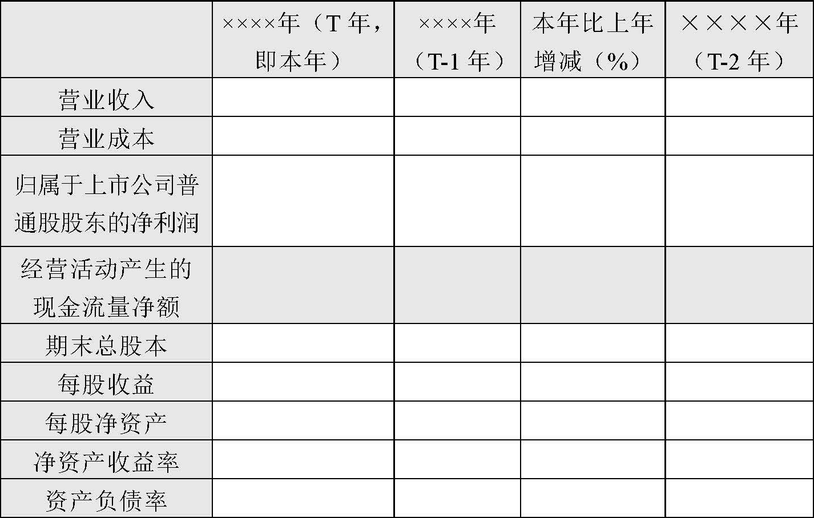

公开发行证券的公司信息披露内容与格式准则第30号——创业板上市公司年度报告的内容与格式（2012年修订）
第一章 总则
第一条 为规范创业板上市公司年度报告的编制及信息披露行为，保护投资者合法权益，根据《公司法》、《证券法》等法律、法规及中国证监会的有关规定，制订本准则。
第二条 凡根据《公司法》、《证券法》在中华人民共和国境内公开发行股票并在创业板上市的股份有限公司（以下简称公司）应当按照本准则的要求编制和披露年度报告。
第三条 本准则的规定是对公司年度报告信息披露的最低要求。凡对投资者投资决策有重大影响的信息，不论本准则是否有明确规定，公司均应披露。
第四条 本准则某些具体要求对公司确实不适用的，经证券交易所批准后，公司可根据实际情况在不影响披露内容完整性的前提下做出适当修改。
第五条 由于商业秘密等特殊原因导致本准则规定的某些信息确实不便披露的，公司可向证券交易所申请豁免，经证券交易所批准后，可以不予披露。公司应当在相关章节说明未按本准则要求进行披露的原因。商业秘密的确定应保持境内外内容一致。
第六条 在不影响信息披露完整性和不致引起阅读不便的前提下，公司可采取相互引征的做法，对相关部分进行适当的技术处理，以避免不必要的重复和保持文字简洁。
第七条 公司年度报告的全文应按本准则第二章的要求编制，年度报告摘要的内容摘自年度报告正文，编制和披露应遵循本准则第三章的要求，并按照附件的格式进行。
第八条 同时在境内和境外证券市场上市的公司，若境外证券市场对年度报告的编制和披露要求与本准则不同，应遵循报告内容从多不从少，报告要求从严不从宽的原则，并应当在同一日公布年度报告。
第九条 公司年度报告中的财务报告必须经具有证券期货相关业务资格的会计师事务所审计，审计报告须由该所至少两名注册会计师签字。
第十条 公司在编制年度报告时还应遵循如下一般要求：
（一）年度报告中引用的数字应当采用阿拉伯数字，有关货币金额除特别说明外，指人民币金额，并以元、千元、万元、百万元或亿元为单位。
（二）公司可根据有关规定或其他需求，编制年度报告外文译本，但应努力保证中外文文本的一致性，并在外文文本上注明：“本报告分别以中、英（或日、法等）文编制，在对中外文文本的理解上发生歧义时，以中文文本为准。”
（三）年度报告印刷文本应采用质地良好的纸张印刷，幅面为209×295毫米（相当于标准的A4纸规格）。年度报告封面应载明公司的名称、“年度报告”的字样、报告期年份，也可以载有公司的外文名称、徽章或其他标记、图案等。年度报告的目录应编排在显著位置。
（四）公司可以在年度报告正文前刊载宣传本公司的照片、图表或致投资者信，但不得刊登任何祝贺性、恭维性或推荐性的词句、题字或照片，不得含有夸大、欺诈、误导或内容不准确、不客观的词句。
（五）年度报告中若涉及行业分类，必须遵循中国证监会有关上市公司行业分类的规定；公司可以在此基础上，增加披露使用其它行业分类的数据、资料作为参考。
第十一条 公司应当在每个会计年度结束之日起4个月内将年度报告全文和摘要刊登在中国证监会指定的网站和公司网站上；同时在至少一种中国证监会指定报纸上刊登“本公司XXXX年度报告及摘要已于X年X月X日在中国证监会指定的创业板信息披露网站上披露，请投资者注意查阅。”的提示性公告。
公司可以将年度报告刊登在其他网站和其他报刊上，但不得早于在中国证监会指定的网站上披露的时间。
第十二条 在年度报告披露前，任何当事人不得泄露与其有关的信息，或利用这些信息谋取不正当利益。
第十三条 公司应当在年度报告公布后，将年度报告原件或有法律效力的复印件备置于公司办公地点，以供股东和投资者查阅。公司应在年度报告公布后10个工作日内，将年度报告及相关文件报送公司住所地中国证监会派出机构。
第十四条 公司董事会、监事会及董事、监事、高级管理人员应当保证年度报告内容的真实性、准确性、完整性，承诺其中不存在虚假记载、误导性陈述或重大遗漏，并就其保证承担个别和连带的法律责任。如有董事、监事、高级管理人员对年度报告内容的真实性、准确性、完整性无法保证或存在异议的，应当单独陈述理由和发表意见。未参会董事应当单独列示其姓名。
第十五条 特殊行业公司，除执行本准则规定外，还应执行中国证监会就该行业信息披露制定的特别规定。
第二章 年度报告正文
第一节 重要提示、目录及释义
第十六条 公司应在年度报告文本扉页刊登如下（但不限于）重要提示：
本公司董事会、监事会及董事、监事、高级管理人员保证本报告所载资料不存在任何虚假记载、误导性陈述或者重大遗漏，并对其内容的真实性、准确性和完整性承担个别及连带责任。
如有董事、监事、高级管理人员对年度报告内容的真实性、准确性、完整性无法保证或存在异议的，应当声明：XX董事、监事、高级管理人员无法保证本报告内容的真实性、准确性和完整性，理由是：……，请投资者特别关注。如有董事未出席董事会，应当单独列示其姓名。
如果执行审计的会计师事务所对公司出具了非标准审计报告，重要提示中应增加以下陈述：
XX会计师事务所为本公司出具了带强调事项段的无保留意见（或保留意见、否定意见、无法表示意见）的审计报告，本公司董事会、监事会对相关事项亦有详细说明，请投资者注意阅读。
公司负责人、主管会计工作负责人及会计机构负责人（会计主管人员）应当声明：保证年度报告中财务报告的真实、完整。
如果报告中涉及未来的计划、预测等方面的内容，重要提示中还应增加以下陈述：
本报告中如有涉及未来的计划、业绩预测等方面的内容，均不构成本公司对任何投资者及相关人士的承诺，投资者及相关人士均应对此保持足够的风险认识，并且应当理解计划、预测与承诺之间的差异。
第十七条 年度报告目录应标明各章、节的标题及其对应的页码。公司应对可能造成投资者理解障碍及有特定含义的术语作出清晰、易懂的解释，年报的释义应在目录次页排印。
第二节 公司基本情况简介
第十八条 公司应披露如下内容:
（一）公司的法定中、英文名称及缩写。
（二）公司法定代表人。
（三）公司董事会秘书及证券事务代表的姓名、联系地址、电话、传真、电子信箱。
（四）公司注册地址，公司办公地址及其邮政编码，公司国际互联网网址、电子信箱。
（五）公司选定的信息披露媒体的名称，登载年度报告的中国证监会指定网站的网址，公司年度报告备置地点。
（六）公司股票简称和股票代码。
（七）公司聘请的会计师事务所名称、办公地址。
（八）公司历史沿革：报告期内的历次注册变更情况，包括变更注册登记日期、地点；企业法人营业执照注册号；税务登记号码；组织机构代码等。
第三节 会计数据和财务指标摘要
第十九条 公司应采用数据列表方式，提供截至报告期末公司近3年的主要会计数据和财务指标，包括但不限于以下各项：营业收入、营业利润、利润总额、归属于上市公司普通股股东的净利润、归属于上市公司普通股股东的扣除非经常性损益后的净利润、资产总额、负债总额、归属于上市公司普通股股东的所有者权益、经营活动产生的现金流量净额、每股经营活动产生的现金流量净额、归属于上市公司普通股股东的每股净资产、净资产收益率、每股收益、资产负债率等。计算公式（不须披露）如下：
归属于上市公司普通股股东的每股净资产=年度末归属于上市公司普通股股东的所有者权益/年度末普通股股份总数
每股经营活动产生的现金流量净额=经营活动产生的现金流量净额/年度末普通股股份总数
净资产收益率、每股收益的计算公式参照《公开发行证券的公司信息披露编报规则第9号——净资产收益率和每股收益的计算及披露》执行。已发行人民币普通股，又发行境内上市外资股或境外上市外资股的公司，应披露按不同会计准则计算的净利润和归属于上市公司普通股股东的所有者权益产生的重大差异，并说明主要原因。
公司在披露“扣除非经常性损益后的净利润”时，应同时说明扣除的项目、涉及金额。
第二十条 公司主要会计数据和财务指标的计算和披露应遵循如下要求：
（一）因会计政策变更及会计差错更正等追溯调整或重述以前年度会计数据的，应披露会计政策变更的原因及会计差错更正的情况，并应同时披露调整前后的数据。
（二）应按照《公开发行证券的公司信息披露解释性公告第1号——非经常性损益（2008年修订）》的要求，确定和计算非经常性损益。
（三）编制合并财务报表的公司应以合并财务报表数据填列或计算以上数据和指标。
（四）数据应根据时间顺序从左到右进行排列，左边起是报告期的数据。
第二十一条 公司应在主要会计数据和财务指标摘要之后刊登重大风险提示。公司对风险因素的描述应当围绕公司的经营情况，遵循重要性原则，披露可能对公司下一年度发展战略和经营目标的实现产生不利影响的重大风险，包括但不限于未来不能持续成长的风险、不能持续进行技术创新或产品更新的风险、产品的市场竞争风险、对大客户的依赖风险、重大投资失败的风险、关键技术人员流失的风险等，并根据实际情况，披露已经或将要采取的措施。
第四节 董事会报告
第二十二条 公司董事会报告中应当对报告期公司从事的主要业务进行回顾，包括报告期公司所从事的主要业务和主要产品简介、行业发展变化、市场竞争格局以及公司行业地位等内容。
第二十三条 公司董事会报告中应当对财务报告数据与其他必要的统计数据，以及报告期内发生的和未来将要发生的重大事项，进行讨论与分析，以有助于投资者了解其经营成果、财务状况及未来可能变化。公司可以运用逐年比较、数据列表或其他方式对相关事项进行列示，以增进投资者的理解。披露应遵守以下的原则：
（一）披露内容应具有充分的可靠性。引用的数据、资料应有充分的依据，如果引用第三方的数据、资料作为讨论与分析的依据，应注明来源，并判断第三方的数据、资料是否拥有足够的权威性。
（二）披露内容应具有充分的相关性。公司应充分考虑并尊重投资者的投资需要，披露的内容应能够帮助投资者更加充分地理解公司未来变化的趋势。公司应重点讨论和分析重大的投资项目、资产购买、兼并重组、在建工程、研发项目、人才培养和储备等方面在报告期内的执行情况和未来的计划。
（三）披露内容应具有充分的关联性。分析与讨论公司的外部环境、市场格局、风险因素等内容时，所述内容应与公司的经营成果、财务状况具有足够的关联度，应充分考虑公司的外部经营环境（包括但不限于经济环境、行业环境等）和内部资源条件（包括但不限于资产、技术、人员、经营权等），结合公司的战略和营销等管理政策，以及公司所从事的业务特征，进行有针对性的讨论与分析，并且保持逻辑的连贯。
（四）鼓励公司披露管理层在经营管理活动中使用的关键业绩指标。可以披露指标的假定条件和计算方法以及公司选择这些指标的依据，重点讨论与分析指标变化的原因和趋势。关键业绩指标由公司根据自身特点，选择对业绩敏感度较高且公司有一定控制能力的要素而确定。
（五）讨论与分析应充分解释导致财务数据变动的根本原因及其反映的可能趋势，而不能只是重复财务报告的内容。
（六）披露内容应突出重要性。避免空泛、模板式的语言，以及过多披露不重要的事项而掩盖重要信息。
第二十四条 公司应回顾分析在报告期内的主要经营情况。对重要事项的披露应该完整全面，不能有选择地披露。公司应披露已对报告期产生重要影响以及未对报告期产生影响但对未来具有重要影响的事项等。内容包括但不限于：
（一）主营业务。应包括（但不限于）收入、成本、费用、研发投入、现金流等科目，需要提示变化并分析变化的原因。若公司利润构成或利润来源发生重大变动，应详细说明。
1.收入：公司应说明驱动业务收入变化的产销量、订单或劳务的结算比例等因素。如果因子公司股权变动导致合并范围变化的，应提供上年同口径的数据供投资者参考。若报告期内产品或服务发生重大变化或调整，公司应介绍已推出或宣布推出的新产品及服务，并说明对公司经营及业绩的影响。
对实物销售收入大于劳务收入的公司，应按照行业口径，披露报告期内的生产量、销售量和库存量情况。若相关数据同比变动在30%以上的，应说明原因。
对于订单收入占比超过50%的公司，应披露重大的已签订订单情况，并披露前期订单在本年度进展和本年度新增订单的完成比例。对前期订单分散且数量较多的，可以按行业口径归类披露。临时报告已经披露过的情况，公司应提供相关披露索引。
2.成本：公司应披露本年度成本的主要构成项目，如原材料、人工工资、折旧、能源和动力等在成本总额中的占比情况，披露可按行业分类列示，并提供上年同口径可比数据。如果涉及商业秘密的，公司可仅披露占比最高或最主要的单个项目。
3.费用：若报告期公司销售费用、管理费用、财务费用、所得税等财务数据同比发生重大变动的，应当说明产生变化的主要影响因素。
4.研发投入：公司应说明本年度所进行研发项目的目的，项目进展和拟达到的目标，并预计对公司未来发展的影响。公司应说明本年度研发支出总额及资本化的比重、研发支出占营业收入的比重，如数据较上年发生显著变化，还应解释变化的原因。
5.现金流：结合公司现金流量表相关数据，说明公司经营活动、投资活动和筹资活动产生的现金流量的构成情况，若相关数据同比发生重大变动，公司应当分析主要影响因素。若报告期公司经营活动产生的现金流量与报告期净利润存在重大差异的，公司应当解释原因。
6.公司应当披露主要供应商、客户情况：介绍公司向前5名供应商合计的采购金额占公司年度采购总额的比例，向前5名客户合计的销售额占公司年度销售总额的比例。向单一供应商或客户采购、销售比例超过30%的，还应说明该供应商或客户采购、销售金额及所占比例，报告期内公司与其之间的采购、销售金额和比例相比以前年度是否发生较大变化；属于同一控制人控制的供应商及客户应合并列示。
7.公司首次公开发行招股说明书中披露的未来发展与规划延续至报告期的，公司应对规划目标的实施进度进行分析，实施进度与规划不符的，应详细说明原因。
公司应当回顾总结前期披露的发展战略和经营计划在报告期内的进展，对未达到计划目标的情况进行解释。若公司实际经营业绩低于或高于曾公开披露过的本年度盈利预测20%以上的，应从收入、成本、费用、税负等相关方面说明造成差异的原因。
（二）分部报告。公司应当根据自身实际情况，分别按行业、产品或地区说明报告期内公司主营业务收入、主营业务利润的构成情况。对于占公司营业收入或营业利润10%以上的行业、产品或地区，应分项列示其营业收入、营业成本、营业利润率，并分析其变动情况。公司应当保持业务数据统计口径的一致性，如确需调整的，公司应提供调整后的过去3年数据。
（三）资产及负债状况。若报告期公司资产构成（货币资金、应收款项、存货、投资性房地产、长期股权投资、固定资产、在建工程、短期借款、长期借款等占总资产的比重）同比发生重大变动的，应当说明产生变化的主要影响因素。
报告期内公司具有以公允价值计量的资产的，应当说明报告期内该资产的购入、售出以及公允价值变动等情况。
公司报告期内如主要资产计量属性发生重大变化，应说明原因及其对经营成果和财务状况的影响。
（四）竞争能力。公司应分析说明报告期内公司核心竞争能力（如设备、专利、非专利技术、特许经营权、土地使用权、水面养殖权、探矿权、采矿权、核心技术人员、独特经营方式和盈利模式、允许他人使用自己拥有的资源要素或作为被许可方使用他人资源要素等）方面的重要变化及对公司所产生的影响。如果发生因设备或技术升级换代、核心技术人员辞职、特许经营权丧失等导致公司核心竞争能力受到严重影响的，应详细说明具体情况及公司拟采取的措施。
（五）投资状况。公司应介绍本年度投资情况，分析报告期内公司投资额同比变化情况。对达到公开披露标准的，公司应披露被投资公司名称、主要业务、投资份额和持股比例、资金来源、合作方、投资期限、产品类型、预计收益、本期投资盈亏、是否涉诉等信息。
1.对募集资金投资项目，在项目未达到预计收益之前，公司应持续列表说明募集资金时承诺投资项目、项目进度与实际投资项目、进度的异同。尚未使用的募集资金，应说明资金用途及去向。当项目达到预计收益之后，公司可提示投资者在以后年份停止披露。
实际投资项目如没有变更，公司应介绍项目资金的投入情况、项目的进度及预计收益；若项目已产生收益，应说明累计收益情况；未达到计划进度和收益的，应当解释原因。实际投资项目如有变更，公司应介绍项目变更原因、变更程序及其披露情况，项目资金的投入情况，项目的进度及预计收益；若项目已产生收益，应说明收益情况；未达到计划进度和收益的，应说明原因。同时还需说明原项目的预计收益情况。
公司首次公开发行时产生的超募资金的使用延续到报告期的，应说明超募资金的使用计划、计划实施情况、资金使用的收益以及超募资金的节余情况。
2.对非募集资金投资项目，公司应根据重要性原则，对报告期持有其他上市公司股权、参股商业银行、证券、保险、信托和期货公司等金融企业股权进行披露，包括初始投资成本、持股比例、期末账面值、本期收益、股份来源等情况；对报告期用于买卖其他上市公司股份的资金数量、股份数量及产生的投资收益进行披露；对报告期持有的以公允价值计量的境内外基金、债券、信托产品、期货、金融衍生工具等金融资产的初始投资成本、资金来源、报告期内购入或售出及投资收益情况、公允价值变动情况等进行披露。重要性标准，可参考负责公司财务报告审计的会计师事务所的审计标准，公司应披露重要性标准的具体数值。
（六）主要控股参股公司分析。公司应详细介绍主要子公司的主要业务、注册资本、总资产、净资产、净利润，本年度取得和处置子公司的情况，包括取得和处置的方式及对公司整体生产经营和业绩的影响。如来源于单个子公司的净利润或单个参股公司的投资收益对公司净利润影响达到10%以上，还应介绍该公司主营业务收入、主营业务利润等数据。若单个子公司或参股公司的经营业绩同比出现大幅波动，且对公司合并经营业绩造成重大影响的，公司应当对其业绩波动情况及其变动原因进行分析。
主要子公司或参股公司的经营情况的披露应参照上市公司董事会报告的要求。对于与公司主业关联较小的子公司，应披露持有目的和未来经营计划；对本年度内投资收益占净利润比例达50%以上的公司，应披露投资收益中占比在10%以上的股权投资项目。
若主要子公司或参股公司的经营业绩未出现大幅波动，但其资产方面或其他主要财务指标出现显著变化，并可能在将来对公司业绩造成影响，也应对变化情况和原因予以说明。
（七）公司控制的特殊目的主体情况。公司存在其控制下的特殊目的主体时，应介绍公司对其控制权方式和控制权内容，并说明公司从中可以获取的利益和对其所承担的风险。另外，公司还应介绍特殊目的主体对其提供融资、商品或劳务以支持自身主要经营活动的相关情况。公司控制的特殊目的主体为“《企业会计准则第33号——合并财务报表》应用指南”中所规定的“特殊目的主体”。
第二十五条 公司应对未来发展进行展望。应讨论和分析行业竞争格局和趋势，披露公司未来发展战略、下一年度的经营计划以及公司可能面对的风险。主要包括但不限于：
（一）行业格局和趋势。公司应结合自身的业务规模、经营区域、产品类别以及竞争对手等情况，介绍与公司业务关联的宏观经济层面或行业环境层面的发展趋势，以及公司的行业地位或区域市场地位的变动趋势。公司应结合主要业务的市场变化情况、营业成本构成的变化情况、市场份额变化情况等因素，分析公司的主要行业优势和困难，并说明变化对公司未来经营业绩和盈利能力的影响。
（二）公司发展战略。公司应围绕行业壁垒、核心技术替代或扩散、产业链整合、价格竞争、成本波动等方面向投资者提示未来公司发展机遇和挑战，披露公司发展战略，以及拟开展的新业务、拟开发的新产品、拟投资的新项目等。若公司存在多种业务的，还应当说明各项业务的发展规划。分析和讨论应提供数据支持，并说明数据来源。
公司对未来发展战略的披露，应结合投资者关注较多的问题，以及公司现阶段所面临的特定环境、公司所处行业及所从事业务特征来进行。重点对公司未来主要经营模式或业务模式是否会发生重大变化，新技术、新产品的开发计划及进展，产能扩张、资产收购等重大投资计划，投资者回报安排等发展战略、发展步骤进行有针对性的描述，以助于投资者了解公司未来发展方向及经营风格。
（三）经营计划。公司应当披露下一年度的经营计划，包括（但不限于）收入、费用、成本计划，及下一年度的经营目标，如销售额的提升、市场份额的扩大、成本下降、研发计划等，为达到上述经营目标拟采取的策略和行动。公司应同时说明该经营计划并不构成公司对投资者的业绩承诺，提示投资者对此保持足够的风险意识，并且应当理解经营计划与业绩承诺之间的差异。公司应披露维持公司当前业务并完成在建投资项目所需的资金需求，对公司经营计划涉及的投资资金的来源、成本及使用情况进行简要说明。
（四）可能面对的风险。公司应当针对自身特点，遵循关联性原则和重要性原则披露可能对公司未来发展战略和经营目标的实现产生不利影响的重大风险因素（例如政策性风险、行业特有风险、业务模式风险、经营风险、环保风险、汇率风险、利率风险、技术风险、产品价格风险、原材料价格及供应风险、财务风险、单一客户依赖风险、核心技术人员变动等），披露的内容应当充分、准确、具体，应尽量采取定量的方式分析各风险因素对公司当期及未来经营业绩的影响，并介绍已经或计划采取的应对措施。
对于本年度较上一年度的新增风险因素，公司应对其产生的原因、对公司的影响以及已经采取或拟采取的措施及效果等进行分析。若分析表明相关变化趋势已经、正在或将要对公司的财务状况和经营成果产生重大影响的，公司应提供管理层对相关变化的基本判断，尽可能定量分析对公司的影响程度。
第二十六条 对会计师事务所出具非标准审计报告的，公司应就所涉及事项做出说明。
报告期发生会计政策、会计估计变更或重要前期差错更正的，董事会应讨论、分析变更、更正的原因及影响。如涉及追溯调整，应披露对以往各年度财务状况和经营成果的影响金额；如涉及更换会计师事务所，应披露是否就相关事项与前任会计师事务所进行了必要的沟通。
适用境内外会计准则的公司，董事会应对产生差异的情况进行详细说明。
第二十七条 公司应披露利润分配政策以及近3年（包括本报告期）的股利分配方案（预案）、资本公积金转增股本方案（预案）和现金红利分配情况。对于报告期内盈利但未提出现金利润分配方案预案的公司，应详细说明原因，同时说明公司未分配利润的用途和使用计划。
第二十八条 鼓励公司披露社会责任报告。社会责任报告应经公司董事会审议通过，并以单独报告的形式在披露年度报告的同时在指定网站披露。
第二十九条 公司应披露内幕信息知情人管理制度的建立和执行情况，报告期内自查内幕信息知情人涉嫌内幕交易的情况，以及监管部门的查处和整改情况。
第五节 重要事项
第三十条 公司应披露重大诉讼、仲裁事项。包括发生在本年度涉及公司的重大诉讼、仲裁事项，应陈述该事项基本情况、涉及金额，是否存在预计负债。已在上年度年报中披露，但尚未结案的重大诉讼、仲裁事项，应陈述其进展情况或审理结果及影响。对已经结案的重大诉讼、仲裁事项，还应说明其执行情况。如以上诉讼、仲裁事项已在临时报告披露且无后续进展的，则可只披露事项概述，并提供临时报告相关披露索引。
如报告期内公司无重大诉讼、仲裁事项，应明确陈述“本年度公司无重大诉讼、仲裁事项”。
第三十一条 发生控股股东及其关联方非经营性占用资金情况的，公司应充分披露资金占用期初金额、发生额、偿还额、期末余额、占用原因、预计偿还方式及清偿时间。
公司应同时披露年审会计师对资金占用的专项审核意见。
第三十二条 公司应披露报告期内发生的破产相关事项，包括向法院申请重整、和解或破产清算，法院受理重整、和解或破产清算，公司重整期间等发生的法院裁定结果及其他重大事项。执行相关重整、和解等计划的公司还应说明计划的具体内容及执行情况。如相关破产事项已在临时报告披露且后续实施无变化的，则可只披露事项概述，并提供临时报告相关披露索引。
第三十三条 公司应披露报告期内收购及出售资产、企业合并事项的简要情况及进程，分析上述事项对公司业务连续性、管理层稳定性的影响，同时还应说明事项是否按计划如期实施，如已实施完毕应说明其对财务状况和经营成果的影响及其占利润总额的比例；如未按计划实施则说明原因及公司采取的措施。
第三十四条 公司应披露股权激励计划在本报告期的具体实施情况，包括但不限于：实施股权激励计划履行的相关程序及总体情况；激励基金提取情况；股权激励股份购买情况；对激励对象的考核情况；对激励对象范围的调整情况及履行的程序；股权激励股份授予数量及解除锁定情况；股票期权授予及行权情况；股票期权行权价格及期权数量等的调整情况及履行的程序；实施股权激励计划对公司本报告期及以后各年度财务状况和经营成果的影响；涉及股权激励的其它事项。如相关股权激励事项已在临时报告披露且后续实施无进展或变化的，则可只披露事项概述，并提供临时报告相关披露索引。
第三十五条 公司应披露报告期内发生的重大关联交易事项。若对于某一关联方，报告期内累计关联交易总额高于1000万元且占公司最近一期经审计净资产值5%以上的，须披露关联交易方、交易内容、交易时间及披露时间等情况。
如果发生的交易属不同类型，应按以下要求分别披露：
（一）与日常经营相关的关联交易，至少应披露以下内容：关联交易方、交易内容、定价原则、交易价格、交易金额、占同类交易金额的比例、结算方式。可以获得同类交易市场价格的，应披露市场参考价格，实际交易价格与市场参考价格差异较大的，应说明原因。大额销货退回需披露详细情况。
公司按类别对当年度将发生的日常关联交易总金额进行预计的，应披露日常关联交易事项在报告期内的实际履行情况。
（二）资产、股权转让发生的关联交易，至少应披露以下内容：关联交易方、交易内容、定价原则、资产的账面价值、评估价格、交易价格、结算方式及获得的转让收益，转让价格与账面价值或评估值差异较大的，应说明原因。如相关资产、股权转让关联交易事项已在临时报告披露且后续实施无变化或进展的，则可只披露事项概述、披露日期，并提供临时报告相关披露索引。
（三）公司与关联方共同对外投资发生的关联交易，至少应披露以下内容：共同投资方、被投资企业的基本情况及业务范围、投资进展情况等。
（四）公司与关联方存在债权债务往来、担保等事项的，应披露形成的原因及其对公司的影响。
（五）其他重大关联交易。
第三十六条 公司应披露重大合同及其履行情况。包括（但不限于）：
（一）在报告期内发生或以往期间发生但延续到报告期的托管、承包、租赁其他公司资产或其他公司托管、承包、租赁公司资产的事项，且该事项为公司带来的利润达到公司当年利润总额的10%以上（含10%）时，应详细披露有关合同的主要内容，如有关资产的情况、涉及的金额和期限、收益及其确定依据等。同时还应披露该收益对公司的影响。
（二）重大担保。公司应当披露报告期内履行的及尚未履行完毕的担保合同，包括担保金额、担保期限、担保对象、担保类型（一般担保或连带责任担保）、担保的决策程序等；对于未到期担保合同，如有明显迹象表明有可能承担连带清偿责任，应明确说明。
公司还应披露本年度发生的公司为子公司提供担保的金额，担保总额占公司净资产的比例；公司为股东、实际控制人及其关联方提供担保的金额，公司直接或间接为资产负债率超过70%的被担保对象提供的债务担保金额，以及公司担保总额超过净资产50%部分的金额。
（三）在报告期内或报告期继续发生的委托他人进行现金资产管理事项，公司应披露委托事项的具体情况，包括：受托人名称、委托金额、委托期限、报酬确定方式，以及当年度实际收益或损失和实际收回情况等；公司还应说明该项委托是否经过法定程序，未来是否还有委托理财计划；公司若就该项委托计提投资减值准备的，应披露当年度计提金额。若公司有委托贷款事项，也应比照上述委托行为予以披露。
（四）其他重大合同。
第三十七条 公司或持股5%以上股东、实际控制人、董事、监事、高级管理人员如在报告期内或持续到报告期内有承诺事项，包括收购报告书或权益变动报告书中所作承诺、资产重组时所作承诺、首次公开发行或再融资时所作承诺、股权激励时所作承诺，以及其他对公司中小股东所作承诺等，公司董事会应说明该承诺事项在报告期内的履行情况，详细列示承诺方、承诺类型、承诺事项、承诺时间、承诺期限、承诺的履行情况等。如承诺未能及时履行的，应说明未完成履行的原因及下一步工作计划。
另外，如公司资产或项目存在盈利预测，且报告期仍处在盈利预测期间内，公司董事会和相关股东应就资产或项目是否达到原盈利预测及其原因做出说明。同时，公司应提供进行盈利预测时的相关披露索引。
第三十八条 公司应披露聘任、解聘会计师事务所情况，会计师事务所为公司提供服务类别及为不同类别服务所支付的报酬情况，目前的审计机构已为公司提供审计服务的连续年限（年限从审计机构与公司首次签订审计业务约定书日开始计算）。
第三十九条 公司及其董事、监事、高级管理人员、公司控股股东、实际控制人、收购人如在报告期内存在受有权机关调查、司法纪检部门采取强制措施、被移送司法机关或追究刑事责任、中国证监会稽查、中国证监会行政处罚、证券市场禁入、认定为不适当人选或被其他行政管理部门处罚及证券交易所公开谴责的情形，应当说明原因及结论。如中国证监会及其派出机构对公司检查后提出整改意见的，应简单说明整改情况，披露整改报告书的信息披露报纸、网站及日期。
列入省级以上环保部门公布的污染严重企业名单的或存在其他重大社会安全问题的公司及其子公司，应披露公司存在的问题、整改情况。如报告期内被行政处罚，应披露处罚事项、处罚措施及整改情况。
第四十条 年报披露后面临暂停上市和终止上市风险的公司，应当充分披露导致暂停上市或终止上市的原因以及公司采取的消除暂停上市或终止上市情形的措施。面临终止上市风险的公司，应同时披露终止上市后投资者关系管理工作的详细安排和计划。
第四十一条 公司还应披露其他在报告期内发生的《证券法》第六十七条、《上市公司信息披露管理办法》第三十条所列的重大事件，以及公司董事会判断为重大事件的事项。
如前款所涉重要事项已作为临时报告在指定网站披露，只需说明信息披露网站及披露日期。
第四十二条 控股子公司发生的本节所列的重要事项应当视同公司的重要事项予以披露。
第四十三条 公司还应披露其他需要披露的事项，如选定信息披露媒体的变更等。
第六节 股本变动及股东情况
第四十四条 公司应按以下要求披露股本变动情况：
（一）股份变动情况表（按照《公开发行证券的公司信息披露内容与格式准则第5号——公司股份变动报告的内容与格式》（2007年修订）表2规定的格式进行编制）。
披露限售股份变动情况表，其中限售股份指发行时有限售条件的股份，董事、监事及高级管理人员所持股份以及因其他原因限售的股份。该表的具体格式按年度报告摘要披露格式3.1列示（见附件）。
（二）证券发行与上市情况
1.介绍报告期内证券发行情况，包括股票、可转换公司债券、公司债券及其他衍生证券的种类、发行日期、发行价格（或利率）、发行数量、上市日期、获准上市交易数量、交易终止日期等。
2.对报告期内因送股、转增股本、配股、增发新股、非公开发行股票、权证行权、实施股权激励计划、企业合并、可转换公司债券转股、减资、债券发行或其他原因引起公司股份总数及结构的变动、公司资产负债结构的变动，应予以说明。
第四十五条 公司按以下要求披露股东和实际控制人情况：
（一）按照《公开发行证券的公司信息披露内容与格式准则第5号——公司股份变动报告的内容与格式》（2007年修订）表6规定的格式披露以下内容：
1.截至报告期末以及董事会审议年度报告披露日前第5个交易日末的股东总数。
2.持有本公司5%以上（含5%）股份的股东的名称、年度内股份增减变动的情况、年末持股数量、所持股份类别及所持股份质押或冻结的情况。若持股5%以上（含5%）的股东少于10人，则应列出至少前10名股东的持股情况。如所持股份中包括已上市流通股份（或无限售条件股份）、未上市流通股份（或有限售条件股份），应分别披露其数额。
如前10名股东之间存在关联关系或属于《上市公司收购管理办法》规定的一致行动人的，应予以说明。
如果有战略投资者或一般法人因配售新股成为前10名股东的，应予以注明，并披露约定持股期间的起止日期。
以上列出的股东情况中应注明代表国家持有股份的单位或外资股东。
（二）公司控股股东情况
若控股股东为法人的，应披露名称、单位负责人或法定代表人、成立日期、注册资本、主要经营业务或管理活动等；若控股股东为自然人的，应披露其姓名、国籍、是否取得其他国家或地区居留权、最近5年内的职业及职务。如报告期内控股股东发生变更，应列明相关信息披露索引。
公司应披露控股股东目前控股和参股的其他上市公司的股权情况。对控股股东为自然人的，应披露其过去10年曾控股的上市公司情况。
如上市公司不存在控股股东，应予以特别说明。
（三）公司实际控制人情况
公司应比照本款第二项有关控股股东披露要求，披露公司的实际控制人情况，并以方框图及文字的形式披露公司与实际控制人之间的产权和控制关系。实际控制人应披露到自然人、国有资产管理部门，或者股东之间达成某种协议或安排的其他机构或自然人，包括以信托方式形成实际控制的情况。
如实际控制人通过信托或其他资产管理方式控制公司，应披露信托合同或者其他资产管理安排的主要内容，包括信托或其他资产管理的具体方式、信托管理权限（包括公司股份表决权的行使等）、涉及的股份数量及占公司已发行股份的比例、信托或资产管理费用、合同的期限及变更、终止的条件、信托资产处理安排、合同签订的时间及其他特别条款等。
如公司最终控制层面存在多位自然人或自然人控制的法人共同持股的情形，且其中没有一人的持股比例（持有或控制下一级控制层面公司的股份比例）超过50%，各自的持股比例比较接近，公司无法确定实际控制人的，应当披露最终控制层面持股比例在5%以上的股东情况。
（四）其他持股在10%以上（含10%）的法人股东，应介绍其法定代表人、成立日期、主要经营业务或管理活动、注册资本等情况。
（五）公司前10名无限售流通股股东的名称全称、年末持有无限售流通股的数量和种类（A、H股或其它）。公司股票为融资融券标的证券的，股东持股数量应当按照其通过普通证券账户、信用证券账户持有的股票及其权益数量合并计算。
如前10名无限售流通股股东之间，以及前10名无限售流通股股东和前10名股东之间存在关联关系或属于《上市公司收购管理办法》规定的一致行动人的，应予以说明。
第七节 董事、监事、高级管理人员和员工情况
第四十六条 公司应披露董事、监事和高级管理人员的情况，包括：
（一）基本情况
现任董事、监事、高级管理人员的姓名、性别、年龄、任期起止日期、年初和年末持有本公司股份、股票期权、被授予的限制性股票数量、年度内股份增减变动量及增减变动的原因。如为独立董事，需单独注明。
（二）现任董事、监事、高级管理人员最近5年的主要工作经历。董事、监事、高级管理人员如在股东单位任职，应说明职务及任职期间，以及在除股东单位外的其他单位的任职或兼职情况。上市公司应披露董事、监事和高级管理人员（包括前任）受证券监管机构处罚的历史情况。
（三）年度报酬情况
董事、监事和高级管理人员报酬的决策程序、报酬确定依据以及报酬的实际支付情况。披露每一位现任及报告期内离任董事、监事和高级管理人员在报告期内从公司获得的税前报酬总额（包括基本工资、奖金、津贴、补贴、职工福利费和各项保险费、公积金、年金以及以其他形式从公司获得的报酬）以及从公司关联方获得的应付报酬总额，全体董事、监事和高级管理人员的报酬合计。另外，将获得的股权激励按照可行权股数、已行权数量、行权价以及报告期末市价单独列示。
公司应列明不在公司领取报酬、津贴的董事、监事的姓名，并注明其是否在股东单位或其他关联单位领取报酬、津贴。
（四）在报告期内被选举或离任的董事和监事、聘任或解聘的高级管理人员姓名，及董事、监事离任和高级管理人员解聘原因。
第四十七条 公司应披露核心技术团队或关键技术人员（非董事、监事、高级管理人员）等对公司核心竞争能力有重大影响的人员的变动情况，并说明变动对公司经营的影响及公司采取的应对措施。
第四十八条 公司应披露员工情况，包括在职员工的数量、专业构成（如生产人员、销售人员、技术人员、财务人员、行政人员）、教育程度及公司需承担费用的离退休职工人数。
对于劳务外包数量较大的，公司应披露劳务外包的工时总数和支付的报酬总额。
第八节 公司治理
第四十九条 公司应说明公司治理的实际状况与中国证监会发布的有关上市公司治理的规范性文件是否存在重大差异，如有重大差异，应说明具体情况及原因。
第五十条 公司应介绍报告期内召开的年度股东大会、临时股东大会、董事会的有关情况，包括会议届次、召开日期，并提供相关信息披露索引。
第五十一条 公司应披露年报信息披露重大差错责任追究制度的建设情况。公司报告期内如发生重大会计差错更正、重大遗漏信息补充以及业绩预告修正等情况，应按照本准则的要求逐项如实披露更正、补充或修正的原因及影响，披露董事会对有关责任人采取的问责措施及处理结果。
第五十二条 监事会在报告期内的监督活动中发现公司存在风险的，公司应当披露监事会就有关风险的简要意见、监事会会议召开时间、会议届次、参会监事以及在指定披露网站的披露索引及披露日期等信息；否则，公司应当披露监事会对报告期内的监督事项无异议。
第九节 财务报告
第五十三条 公司应披露审计报告正文、经审计的财务报表。
第五十四条 财务报表包括公司报告期末及其前一个年度末的比较式资产负债表、现金流量表、所有者权益（股东权益）变动表、该两年度的比较式利润表及其附注。编制合并财务报表的公司，除提供合并财务报表外，还应提供母公司财务报表。
第五十五条 财务报表附注应当按照《公开发行证券的公司信息披露编报规则第15号——财务报告的一般规定》（2010年修订）和中国证监会发布的相关规定编制。
第十节 备查文件目录
第五十六条 公司应当披露备查文件的目录，包括：
（一）载有法定代表人、主管会计工作负责人（如设置总会计师，须为总会计师）、会计机构负责人（会计主管人员）签名并盖章的财务报表。
（二）载有会计师事务所盖章、注册会计师签名并盖章的审计报告原件。
（三）报告期内在中国证监会指定网站上公开披露过的所有公司文件的正本及公告的原稿。
（四）在其它证券市场公布的年度报告。
公司应当在办公场所置备上述文件的原件。当中国证监会、证券交易所要求提供时，或股东依据法规或公司章程要求查阅时，公司应及时提供。
第三章 年度报告摘要
第一节 重要提示
第五十七条 公司应在年度报告摘要显要位置刊登如下（但不限于）重要提示：“为全面了解本公司的经营成果、财务状况及未来发展规划，投资者应到证监会指定网站仔细阅读年度报告全文。”
如有个别董事、监事、高级管理人员对年度报告内容的真实性、准确性、完整性无法保证或存在异议的，应当声明：“XX董事、监事、高级管理人员无法保证本报告内容的真实性、准确性和完整性，理由是：……，请投资者特别关注。”
如果执行审计的会计师事务所对公司出具了非标准审计报告，重要提示中应增加以下陈述：“XX会计师事务所为本公司出具了带强调事项段的无保留意见（或保留意见、否定意见、无法表示意见）的审计报告，本公司董事会、监事会对相关事项亦有详细说明，请投资者注意阅读。”
公司应提示董事会对本报告期利润的分配预案。
第二节 公司基本情况
第五十八条 公司应披露：
（一）公司股票简称、股票代码（若报告期初至报告披露日期间公司股票简称发生变更，还应同时披露变更前的股票简称）。
（二）公司董事会秘书及证券事务代表的姓名、办公地址、电话、电子邮箱。
第五十九条 公司应采用数据列表方式，提供截至报告期末近3年公司主要会计数据和财务指标，包括以下各项：营业收入、营业成本、归属于上市公司普通股股东的净利润、经营活动产生的现金流量净额、每股收益、每股净资产、净资产收益率、资产负债率、期末总股本等。
表格中金额和股本的计量单位可采用万、亿（元、股）等，减少数据位数，方便阅读。基本原则是小数点前最多保留5位，小数点后保留两位，更多位数请选用更高的单位，如以万、亿等单位表示。
第六十条 公司应披露报告期末公司股本结构、股东总数、前10名股东情况、控制框图。
第三节 管理层讨论与分析
第六十一条 公司管理层应当简要介绍公司报告期内的经营情况，主要围绕公司的市场份额、市场排名、产能和产量及销量、销售价格、成本构成等数据，尽量选择当期重大变化的情况进行讨论，分析公司报告期内经营活动的总体状况，至少包括：
（一）提示主营业务的经营是否存在重大变化。对占公司主营收入或主营业务利润10%以上的产品，分别列示其销售收入、销售成本、毛利率，并提示其中是否存在变化。
（二）提示是否存在需要特别关注的经营季节性或周期性特征（如有）。对于业务年度与会计年度不一致的行业，鼓励披露按业务年度口径汇总的收入、成本、销量、净利润、期末存货的当期和历史数据。
（三）若报告期内公司的营业收入、营业成本、归属于上市公司普通股股东的净利润总额或者构成较前一报告期发生重大变化的，应予以说明。
（四）提示分部报告与上期相比是否存在重大变化。分部情况可参考年报正文摘要而成，分析应主要以经营数据变化的驱动因素分析为主，并保证数据的历史可比性。
第六十二条 若与上一会计期间相比，公司会计政策、会计估计以及财务报表合并范围发生变化，或报告期因重大会计差错而进行追溯调整，应予以披露，并对其原因和影响数进行说明。若年度报告被会计师事务所出具有解释性说明、保留意见、无法表示意见或否定意见的审计报告，公司董事会和监事会应就所涉及事项做出说明。
第六十三条 公司如果预测年初至下一报告期期末的累计净利润可能为亏损或者与上年同期相比发生大幅度变动，应当予以警示并说明。
第四章 附则
第六十四条 本准则所称“控股股东”、“实际控制人”、“关联方”、“关联交易”、“高级管理人员”等的界定按照《公司法》、《证券法》等法律法规以及《上市公司信息披露管理办法》等相关规定执行。
第六十五条 本准则所称“以上”、“以内”包含本数，“超过”、“少于”、“低于”、“以下”不含本数。
第六十六条 本准则自2013年1月1日起施行。《公开发行证券的公司信息披露内容与格式准则第30号——创业板上市公司年度报告的内容与格式》（证监会公告〔2009〕33号）同时废止。
附件：
年度报告摘要披露格式
XXXX股份有限公司年度报告摘要
§1 重要提示
1.1 为全面了解本公司的经营成果、财务状况及未来发展规划，投资者应到指定网站仔细阅读年度报告全文。网站地址为：chinext.cninfo.com.cn；chinext.cs.com.cn；chinext.cnstock.com；chinext.stcn.com；chinext.ccstock.cn。
1.2 如有董事、监事、高级管理人员声明对年度报告内容的真实性、准确性、完整性无法保证或存在异议的，应当声明：
XX董事、监事、高级管理人员无法保证本报告内容的真实性、准确性和完整性，理由是：……，请投资者特别关注。
1.3 如有董事未出席董事会，应当单独列示其姓名。
1.4 XX会计师事务所对本年度公司财务报告的审计意见为：XXXX。
如当期会计师事务所发生变更，公司应增加提示：
公司本年度会计师事务所由XX会计师事务所变更为XX会计师事务所。
如执行审计的会计师事务所出具了带强调事项段的无保留意见、保留意见、无法表示意见或否定意见的审计报告（以下简称“非标准审计报告”），应当特别提示:
XX会计师事务所为本公司出具了带强调事项段的无保留意见（或保留意见、无法表示意见、否定意见）的审计报告，本公司董事会、监事会对相关事项亦有详细说明，请投资者注意阅读。
1.5 公司联系方式为：董秘XXX，电话为XXXX，电子信箱为XXXX，办公地址为XXXX，证券事务代表为XXX，电话为XXXX，电子信箱为XXXX，办公地址为XXXX。
1.6 公司董事会建议以公司XXXX年XX月XX日的总股本XXXX万股为基数，每XX股送现金红利X元，并以资本公积转增股本，每XX股转增X股。
1.7 本报告中如有涉及未来的计划、预测等方面的内容，均不构成本公司对任何投资者及相关人士的承诺。
§2 会计数据和财务指标摘要注1&注2

§3 股本结构及股东情况
3.1 股本结构表（按照《公开发行证券的公司信息披露内容与格式准则第5号——公司股份变动报告的内容与格式》（2007年修订）表1或表2规定的格式编制）。
3.2 股东数量及前10名股东持股情况表（按照《公开发行证券的公司信息披露内容与格式准则第5号——公司股份变动报告书的内容与格式》（2007年修订）表6规定的格式编制）
3.3 公司与控股股东、实际控制人之间的产权及控制关系的方框图
§4 管理层讨论与分析
管理层可以图表结合文字形式，简明、扼要分析公司在报告期内的财务状况、经营成果及重大事项。
§5 涉及财务报告的相关事项
5.1 与上年度财务报告相比，会计政策、会计估计和核算方法发生变化的，公司应当说明情况、原因及其影响。
5.2 报告期内发生重大会计差错更正需追溯重述的，公司应当说明情况、更正金额、原因及其影响。
5.3 与上年度财务报告相比，对财务报表合并范围发生变化的，公司应当做作出具体说明。
5.4 年度财务报告被会计师事务所出具非标准审计意见的，董事会、监事会应当对涉及事项做作出说明。
注释：
注1：提供截至报告期末公司近三年调整后的主要会计数据和财务指标。
注2：表格中金额和股本的计量单位可采用万、百万、亿（元、股）等。